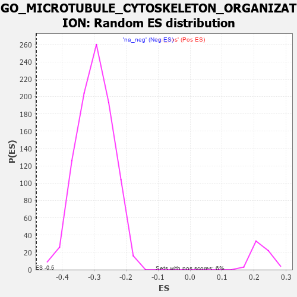

| | | Dataset | 7d |
| Phenotype | NoPhenotypeAvailable |
| Upregulated in class | na_neg |
| GeneSet | GO_MICROTUBULE_CYTOSKELETON_ORGANIZATION |
| Enrichment Score (ES) | -0.4810669 |
| Normalized Enrichment Score (NES) | -1.614173 |
| Nominal p-value | 0.0 |
| FDR q-value | 0.085319154 |
| FWER p-Value | 1.0 |
Table: GSEA Results Summary
 Fig 1: Enrichment plot: GO_MICROTUBULE_CYTOSKELETON_ORGANIZATION
Fig 1: Enrichment plot: GO_MICROTUBULE_CYTOSKELETON_ORGANIZATION
Profile of the Running ES Score & Positions of GeneSet Members on the Rank Ordered List
| PROBE | GENE SYMBOL | GENE_TITLE | RANK IN GENE LIST | RANK METRIC SCORE | RUNNING ES | CORE ENRICHMENT | | 1 | TPPP3 | | | 195 | 1.079 | -0.0135 | No |
| 2 | MLH1 | | | 423 | 0.679 | -0.0353 | No |
| 3 | CDC20 | | | 480 | 0.644 | -0.0357 | No |
| 4 | KIF23 | | | 522 | 0.622 | -0.0343 | No |
| 5 | CCNB1 | | | 581 | 0.601 | -0.0353 | No |
| 6 | NDC80 | | | 616 | 0.590 | -0.0334 | No |
| 7 | AURKC | | | 633 | 0.583 | -0.0293 | No |
| 8 | RAE1 | | | 827 | 0.524 | -0.0484 | No |
| 9 | PTPA | | | 947 | 0.497 | -0.0584 | No |
| 10 | ZPR1 | | | 967 | 0.491 | -0.0556 | No |
| 11 | RCC1 | | | 1043 | 0.475 | -0.0601 | No |
| 12 | STAG2 | | | 1069 | 0.470 | -0.0583 | No |
| 13 | CRIPT | | | 1185 | 0.449 | -0.0683 | No |
| 14 | CHD3 | | | 1232 | 0.442 | -0.0695 | No |
| 15 | TBCD | | | 1338 | 0.422 | -0.0784 | No |
| 16 | FKBP4 | | | 1390 | 0.412 | -0.0806 | No |
| 17 | DOCK7 | | | 1398 | 0.410 | -0.0771 | No |
| 18 | E2F4 | | | 1501 | 0.390 | -0.0860 | No |
| 19 | SON | | | 1538 | 0.385 | -0.0866 | No |
| 20 | BIRC8 | | | 1615 | 0.372 | -0.0923 | No |
| 21 | DRG1 | | | 1633 | 0.368 | -0.0906 | No |
| 22 | TPPP | | | 1646 | 0.365 | -0.0883 | No |
| 23 | TPX2 | | | 1708 | 0.355 | -0.0923 | No |
| 24 | ESPL1 | | | 1734 | 0.349 | -0.0918 | No |
| 25 | UVRAG | | | 1831 | 0.332 | -0.1005 | No |
| 26 | NUP62 | | | 1871 | 0.324 | -0.1021 | No |
| 27 | ZW10 | | | 1973 | 0.309 | -0.1117 | No |
| 28 | BRSK2 | | | 1979 | 0.308 | -0.1091 | No |
| 29 | DCTN6 | | | 1999 | 0.305 | -0.1083 | No |
| 30 | CENPE | | | 2086 | 0.293 | -0.1162 | No |
| 31 | INO80 | | | 2120 | 0.288 | -0.1174 | No |
| 32 | CDK2 | | | 2226 | 0.272 | -0.1279 | No |
| 33 | BCAS3 | | | 2352 | 0.253 | -0.1412 | No |
| 34 | CLIP4 | | | 2391 | 0.247 | -0.1435 | No |
| 35 | MET | | | 2430 | 0.240 | -0.1458 | No |
| 36 | KAT2B | | | 2502 | 0.226 | -0.1525 | No |
| 37 | TTLL1 | | | 2764 | 0.189 | -0.1839 | No |
| 38 | FER | | | 2803 | 0.183 | -0.1868 | No |
| 39 | XPO1 | | | 2960 | 0.156 | -0.2051 | No |
| 40 | KIF4B | | | 2965 | 0.155 | -0.2040 | No |
| 41 | ULK4 | | | 3022 | 0.146 | -0.2096 | No |
| 42 | BRCA2 | | | 3024 | 0.146 | -0.2082 | No |
| 43 | MARK3 | | | 3031 | 0.145 | -0.2074 | No |
| 44 | MAP2 | | | 3074 | 0.140 | -0.2113 | No |
| 45 | CHP1 | | | 3089 | 0.138 | -0.2116 | No |
| 46 | PAX6 | | | 3170 | 0.127 | -0.2205 | No |
| 47 | GAS2 | | | 3392 | 0.090 | -0.2479 | No |
| 48 | CDK5 | | | 3480 | 0.080 | -0.2581 | No |
| 49 | FES | | | 3501 | 0.077 | -0.2599 | No |
| 50 | HDAC3 | | | 3528 | 0.072 | -0.2624 | No |
| 51 | PARD3 | | | 3584 | 0.063 | -0.2688 | No |
| 52 | SBDS | | | 3640 | 0.053 | -0.2753 | No |
| 53 | SMC3 | | | 3701 | 0.042 | -0.2825 | No |
| 54 | CEP19 | | | 3778 | 0.031 | -0.2919 | No |
| 55 | SPAST | | | 3801 | 0.027 | -0.2945 | No |
| 56 | WDR47 | | | 3823 | 0.023 | -0.2969 | No |
| 57 | PRC1 | | | 3841 | 0.021 | -0.2988 | No |
| 58 | NEK2 | | | 3871 | 0.016 | -0.3024 | No |
| 59 | NCOR1 | | | 3961 | 0.000 | -0.3138 | No |
| 60 | MCPH1 | | | 4039 | -0.014 | -0.3235 | No |
| 61 | ABL1 | | | 4125 | -0.027 | -0.3341 | No |
| 62 | MZT1 | | | 4145 | -0.032 | -0.3362 | No |
| 63 | TBCEL | | | 4241 | -0.049 | -0.3478 | No |
| 64 | ARL2 | | | 4254 | -0.050 | -0.3488 | No |
| 65 | RAN | | | 4299 | -0.059 | -0.3538 | No |
| 66 | SETD2 | | | 4443 | -0.084 | -0.3712 | No |
| 67 | KIF3B | | | 4450 | -0.085 | -0.3711 | No |
| 68 | SPAG1 | | | 4453 | -0.085 | -0.3705 | No |
| 69 | APC | | | 4558 | -0.107 | -0.3826 | No |
| 70 | SMC1A | | | 4609 | -0.120 | -0.3878 | No |
| 71 | CHMP3 | | | 4660 | -0.129 | -0.3928 | No |
| 72 | DCX | | | 4721 | -0.143 | -0.3990 | No |
| 73 | POC1A | | | 4768 | -0.151 | -0.4032 | No |
| 74 | TPPP2 | | | 4800 | -0.157 | -0.4055 | No |
| 75 | CEP97 | | | 4812 | -0.160 | -0.4052 | No |
| 76 | DLG1 | | | 4860 | -0.169 | -0.4095 | No |
| 77 | TBCE | | | 4862 | -0.170 | -0.4078 | No |
| 78 | MARK2 | | | 4899 | -0.177 | -0.4105 | No |
| 79 | ATRX | | | 4929 | -0.184 | -0.4123 | No |
| 80 | CHMP5 | | | 4952 | -0.188 | -0.4131 | No |
| 81 | DCTN2 | | | 5175 | -0.243 | -0.4389 | No |
| 82 | HDAC6 | | | 5183 | -0.244 | -0.4372 | No |
| 83 | GPSM2 | | | 5228 | -0.252 | -0.4402 | No |
| 84 | CDK1 | | | 5264 | -0.262 | -0.4419 | No |
| 85 | CEP70 | | | 5282 | -0.267 | -0.4412 | No |
| 86 | KIF19 | | | 5392 | -0.294 | -0.4520 | No |
| 87 | PLK4 | | | 5397 | -0.295 | -0.4494 | No |
| 88 | KIF3A | | | 5480 | -0.313 | -0.4566 | No |
| 89 | STIL | | | 5483 | -0.314 | -0.4535 | No |
| 90 | CEP76 | | | 5485 | -0.315 | -0.4503 | No |
| 91 | KIF2A | | | 5511 | -0.322 | -0.4501 | No |
| 92 | NDE1 | | | 5578 | -0.339 | -0.4549 | No |
| 93 | ASPM | | | 5637 | -0.358 | -0.4585 | No |
| 94 | MTCL1 | | | 5697 | -0.374 | -0.4621 | No |
| 95 | TTBK2 | | | 5700 | -0.376 | -0.4584 | No |
| 96 | BBS4 | | | 5806 | -0.407 | -0.4675 | No |
| 97 | SUN2 | | | 5893 | -0.433 | -0.4739 | No |
| 98 | DCTN1 | | | 5950 | -0.454 | -0.4762 | Yes |
| 99 | CENPJ | | | 5968 | -0.460 | -0.4735 | Yes |
| 100 | GCC2 | | | 5994 | -0.470 | -0.4717 | Yes |
| 101 | CKAP5 | | | 6032 | -0.482 | -0.4713 | Yes |
| 102 | RAC1 | | | 6036 | -0.484 | -0.4666 | Yes |
| 103 | PLK1 | | | 6082 | -0.500 | -0.4670 | Yes |
| 104 | TACC2 | | | 6130 | -0.514 | -0.4676 | Yes |
| 105 | GBA2 | | | 6136 | -0.515 | -0.4627 | Yes |
| 106 | TNKS | | | 6138 | -0.516 | -0.4574 | Yes |
| 107 | ROCK1 | | | 6152 | -0.520 | -0.4535 | Yes |
| 108 | DRC1 | | | 6278 | -0.565 | -0.4635 | Yes |
| 109 | ARMC2 | | | 6363 | -0.602 | -0.4679 | Yes |
| 110 | BBS2 | | | 6383 | -0.608 | -0.4639 | Yes |
| 111 | TTLL6 | | | 6422 | -0.629 | -0.4620 | Yes |
| 112 | CETN3 | | | 6440 | -0.636 | -0.4574 | Yes |
| 113 | RTTN | | | 6497 | -0.659 | -0.4576 | Yes |
| 114 | TRPV4 | | | 6515 | -0.668 | -0.4527 | Yes |
| 115 | TTLL5 | | | 6574 | -0.696 | -0.4527 | Yes |
| 116 | ALMS1 | | | 6590 | -0.704 | -0.4471 | Yes |
| 117 | TPR | | | 6597 | -0.709 | -0.4404 | Yes |
| 118 | TTLL9 | | | 6657 | -0.743 | -0.4400 | Yes |
| 119 | CLIP1 | | | 6667 | -0.746 | -0.4332 | Yes |
| 120 | PAK1 | | | 6691 | -0.757 | -0.4282 | Yes |
| 121 | GSK3B | | | 6719 | -0.768 | -0.4234 | Yes |
| 122 | TTLL7 | | | 6736 | -0.778 | -0.4172 | Yes |
| 123 | C2CD3 | | | 6783 | -0.802 | -0.4146 | Yes |
| 124 | SPEF1 | | | 6801 | -0.815 | -0.4081 | Yes |
| 125 | CEP72 | | | 6846 | -0.839 | -0.4048 | Yes |
| 126 | TTLL3 | | | 6857 | -0.845 | -0.3971 | Yes |
| 127 | NINL | | | 6869 | -0.851 | -0.3895 | Yes |
| 128 | PIBF1 | | | 7049 | -0.966 | -0.4021 | Yes |
| 129 | CETN1 | | | 7073 | -0.978 | -0.3947 | Yes |
| 130 | TTC25 | | | 7094 | -0.992 | -0.3867 | Yes |
| 131 | HYDIN | | | 7173 | -1.049 | -0.3855 | Yes |
| 132 | TEKT2 | | | 7177 | -1.053 | -0.3747 | Yes |
| 133 | CETN2 | | | 7200 | -1.070 | -0.3661 | Yes |
| 134 | LRGUK | | | 7229 | -1.101 | -0.3580 | Yes |
| 135 | RSPH1 | | | 7231 | -1.101 | -0.3464 | Yes |
| 136 | RSPH9 | | | 7265 | -1.137 | -0.3386 | Yes |
| 137 | CIB1 | | | 7280 | -1.152 | -0.3281 | Yes |
| 138 | PARP3 | | | 7289 | -1.158 | -0.3168 | Yes |
| 139 | ARMC4 | | | 7311 | -1.181 | -0.3070 | Yes |
| 140 | EFHC1 | | | 7317 | -1.193 | -0.2949 | Yes |
| 141 | EFHC2 | | | 7326 | -1.199 | -0.2832 | Yes |
| 142 | CYLD | | | 7333 | -1.206 | -0.2711 | Yes |
| 143 | WDR78 | | | 7396 | -1.261 | -0.2657 | Yes |
| 144 | WDR63 | | | 7411 | -1.276 | -0.2539 | Yes |
| 145 | NEK7 | | | 7415 | -1.285 | -0.2406 | Yes |
| 146 | SPEF2 | | | 7418 | -1.289 | -0.2272 | Yes |
| 147 | CLIP2 | | | 7479 | -1.374 | -0.2203 | Yes |
| 148 | DCLK2 | | | 7529 | -1.439 | -0.2112 | Yes |
| 149 | GAS8 | | | 7540 | -1.455 | -0.1970 | Yes |
| 150 | IQCG | | | 7541 | -1.455 | -0.1816 | Yes |
| 151 | CNTLN | | | 7557 | -1.484 | -0.1677 | Yes |
| 152 | TTLL4 | | | 7560 | -1.491 | -0.1521 | Yes |
| 153 | CALM1 | | | 7567 | -1.499 | -0.1370 | Yes |
| 154 | SAXO1 | | | 7592 | -1.543 | -0.1236 | Yes |
| 155 | PKD1 | | | 7628 | -1.611 | -0.1110 | Yes |
| 156 | CROCC | | | 7639 | -1.628 | -0.0950 | Yes |
| 157 | MDM1 | | | 7691 | -1.742 | -0.0830 | Yes |
| 158 | PKD2 | | | 7822 | -2.167 | -0.0766 | Yes |
| 159 | CALM3 | | | 7869 | -2.525 | -0.0556 | Yes |
| 160 | CAV3 | | | 7896 | -2.739 | -0.0298 | Yes |
| 161 | XIAP | | | 7947 | -3.696 | 0.0031 | Yes |
Table: GSEA details [plain text format]

Fig 2: GO_MICROTUBULE_CYTOSKELETON_ORGANIZATION: Random ES distribution
Gene set null distribution of ES for GO_MICROTUBULE_CYTOSKELETON_ORGANIZATION